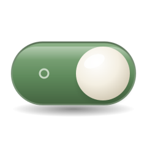

Privacy
Your lists stay
on your computer.
Jongi-nyang has no account and no server, so it collects nothing. Here is everything it keeps, where, who can see it, and when anything can leave your computer — and how you can check it for yourself.
As of Mac 1.49.1 and Windows 1.34.1 · 10 November 2026
-
Plain files on your computer
Your to-dos, notes and events are files in a folder you choose. There’s no server to send them to.
Where things are kept -
Nothing collected
No sign-up, usage statistics, crash reports, ads or update checks. The app never goes online by itself.
Who can see what -
Out only when you open the way
The only ways out are a shared folder, the AI connection and a backup file you export. All three start closed.
The ways out -
Yours to check
The source code is public. You can check the downloaded file and the network connections on your own computer.
How to check
Who can see what
Four parties can reach your lists while you use Jongi-nyang, each at a different time.
-
Always
Jongi-nyang on this computer
Reads and writes the to-dos, notes and events in your storage folder. With no account and no server, it keeps them on this computer.
-
Can’t see it
The person who made Jongi-nyang
There’s no server to receive your lists, and no usage statistics or crash reports arrive. All they see is what you write in a GitHub issue yourself.
-
Only with the AI connection on
Claude
Reads what a conversation needs, and what it reads goes to Anthropic with the conversation. It has no way to delete anything.
-
Only with a shared folder
Your shared-folder service
iCloud Drive, OneDrive, Dropbox or the like moves the files to your other devices, under that service’s own policy.
Where things are kept
All of it stays on your computer. Here it is, down to the file names.
- To-dos, notes, events, alarms, repeats, spaces, history and focus records
-
JSON files in the storage folder. At first that’s the app’s folder; you can pick another one.
Mac
~/Library/Application Support/com.noa.PaperTodo/Windows
%APPDATA%\PaperTodo\In the appDesk › Storage & backup
- Settings
-
Font, reminders, the folder you picked, desktop widgets, lunar dates and holidays, and other settings are kept per device and never go to the shared folder. Lunar dates and holidays are worked out inside the app.
Mac
~/Library/Preferences/com.noa.PaperTodo.plistWindows
%APPDATA%\PaperTodo\settings.json,storage.json - AI connection settings and record
-
ai-link.jsonandai-log.jsonl. They stay in this device’s app folder (the default folder above), even with a shared folder.In the appDesk › AI connection › Recent AI work
- Automatic backups
-
Once a day, the first time you open a new version, and before anything overwrites your lists (an import, a restore or a folder switch), the app saves a backup file (.jongi) to
backupsin its folder. It keeps 14 daily backups and 10 of each other kind. They stay on this device even with a shared folder.In the appDesk › Storage & backup
- Window state on Windows
Electron, which the Windows app is built on, keeps window state such as the last tab you opened, and its caches, in
%APPDATA%\종이냥\.
The ways out
There are only three ways your lists can leave this computer. All three start closed, and only you can open them.
- You pick a shared folder Shared-folder serviceiCloud Drive, OneDrive or Dropbox moves it to your other devices
- You turn on AI ClaudeWhat it reads goes with the conversation
- You export a backup Wherever you save itAnyone you hand it to can read all of it
- On its own The maker, or any serverThere is no way there
- Neither app has any code that connects to the internet: no usage statistics, crash reports, ads or update checks.
- Your browser opens only when you click a link, such as a link in a note or the Claude Desktop download page.
- Reminders and alarms ring on this computer only.
- With a shared folder, Jongi-nyang doesn’t sign in to that service or talk to it. It only reads and writes the files in the folder.
The tap-tap cat
When you type, the tap-tap cat in a corner of the screen taps along with its paws. It’s turned on and off apart from the desktop cat.
What Jongi-nyang knows
- That a key was pressed, and when
- Whether a key is being held down
- Whether it’s a shortcut (⌘ or ⌃, Ctrl on Windows)
What it doesn’t
- Which key it was
- What you typed, or text you’re still composing
- The clipboard
In the appDesk › Jongi-nyang › Tap-tap cat › Tap along
- Even what it knows is never saved, logged or sent. It looks at shortcuts and held keys only so it doesn’t tap then.
- At first it answers typing in Jongi-nyang’s own windows only. That needs no permission.
- On the Mac, choosing ‘In all apps’ makes it tap along in other apps too. That needs macOS’s Input Monitoring permission, so macOS asks once when you choose it. It only listens, so it never changes or blocks what you type in other apps.
- On the Mac, turn the permission off, turn the setting off, lock the screen or quit the app, and it no longer hears other apps’ keys. You can turn the permission off any time in System Settings › Privacy & Security › Input Monitoring.
- On Windows, choosing ‘In all apps’ hears other apps’ keys through a Windows keyboard hook. The key’s code is looked at only briefly, to tell a held key, and never kept. Every key goes on to the app as it was, never changed or blocked.
- On Windows too, turn the setting off, lock the screen or quit the app, and it stops hearing other apps’ keys at once. Keyloggers use the same method, so your antivirus may ask about it; that’s why it starts off.
If you turn on the AI connection
Jongi-nyang for Claude lets you look at and add to your lists while talking with Claude Desktop or Claude Code. It’s off at first.
What Claude does
- Reads to-dos, repeats, events, alarms, notes, focus records and history
- Adds to-dos, events and notes
- Shows the before and after, and changes things once you say yes
What it doesn’t
- Delete anything
- Go online by itself
- Read or write while the switch is off
In the appDesk › AI connection
- While it’s on, Claude runs Jongi-nyang for Claude on this computer when a conversation needs it. For to-dos and one-off events it shows the before and after and changes them only once you say yes.
- What Claude reads goes to Claude as part of the conversation. That conversation is handled under your Claude account settings and Anthropic’s privacy policy.
- Jongi-nyang for Claude reads and writes only the files in Jongi-nyang’s storage folder and app folder.
- Each thing Claude adds or changes is written to
ai-log.jsonlas one line with the before and after. Undo and Recent AI work use it. It stays on this device; past 1 MB only the last 30 days are kept. - The switch is read again every time Claude calls, so from the moment you turn it off Claude can’t read or write any of Jongi-nyang’s files.
Worth knowing
A page of only good news wouldn’t be much of a guide, so here is what Jongi-nyang does not protect.
- Files aren’t encrypted
- The files in the storage folder are readable JSON. Anyone or any program that can get into your account on this computer can read them. In case you lose the computer, it’s worth turning on disk encryption (FileVault on the Mac, BitLocker or Device encryption on Windows).
- A backup file holds everything
- Exported backup files (.jongi) aren’t encrypted either. They hold all your to-dos, notes, events and history, so whoever you give one to can read all of it.
- A hidden space isn’t a lock
- To-dos in spaces hidden on this device stay out of Claude’s Today and lists too. But name the space and Claude shows them, marked as hidden. It only keeps them out of view; it doesn’t stop them being read.
- Inside a shared folder, the service is in charge
- While files move through a shared folder and sit on the service’s servers, that service protects them — not Jongi-nyang.
- The apps aren’t code-signed
- Neither app is code-signed. Check that a downloaded file is exactly the one published with its checksum.
Check it yourself
You don’t have to take this page’s word for it. Anyone can do these three things.
-
Read the code
All of the source code is public. The ways out of the app sit in a few files.
-
Match the downloaded file
Each release lists every file’s SHA-256 value. If your download’s value is the same, it’s exactly the file that was published.
-
Watch the connections
Leave Jongi-nyang running and watch the network. Bytes sent and received should stay at 0.
- Mac: in Activity Monitor › Network, look at Jongi-nyang’s Sent Bytes and Rcvd Bytes. In Terminal,
lsof -nP -i -a -c PaperTodoshould print nothing. - Windows: find Jongi-nyang in Resource Monitor › Network.
- Mac: in Activity Monitor › Network, look at Jongi-nyang’s Sent Bytes and Rcvd Bytes. In Terminal,
What we checked 10 November 2026 · Mac 1.49.1 · Windows 1.34.1
- We searched both apps and the Claude extension for anything that connects to the internet. The only thing is handing a clicked link to your default browser; no code connects by itself.
- All 22 page files of the Windows app may load only the app’s own files (Content Security Policy).
- We ran a test copy of the Mac app off-screen for 1 minute 45 seconds and looked at its connections 100 times, once a second. While it wrote to the notepad and opened history, it opened 0 internet connections.
- We haven’t yet watched the Windows app’s connections on a real Windows PC. We’ll add it here when we do.
This site
- No cookies and no analytics.
- Fonts, images and videos all come from this site. Opening a page sends no request anywhere else.
- If you pick day or night paper, only that choice is kept in this browser (localStorage). Match the system clears it.
- The site is served by GitHub Pages, and the download and document links lead to GitHub. GitHub handles those visits under its own policy.
Removing everything
The folders and settings above are all Jongi-nyang leaves behind. Follow these steps and nothing is left. Removing only the app keeps your lists.
Mac
- If you used the AI connection, disconnect it in Claude first. Remove ‘Jongi-nyang for Claude’ in Claude Desktop’s Settings › Extensions, and if you connected Claude Code, run
claude mcp remove -s user jongi-nyang. - Turn off ‘Open Jongi-nyang at login’ in Desk › Appearance › Startup. If the app is already gone, remove it in System Settings › General › Login Items.
- Quit Jongi-nyang and move it from the Applications folder to the Trash.
- Delete the
~/Library/Application Support/com.noa.PaperTodo/folder. Your lists, the AI connection record and the automatic backups are all in it. - Delete the settings: run
defaults delete com.noa.PaperTodoin Terminal, which removes~/Library/Preferences/com.noa.PaperTodo.plist.
Windows
- If you used the AI connection, disconnect it in Claude first. Remove ‘Jongi-nyang for Claude’ in Claude Desktop’s Settings › Extensions, and if you pasted the connect command into Claude Code, run
claude mcp remove jongi-nyangin that same folder. - Turn off ‘Open Jongi-nyang when Windows starts’ in Desk › Appearance › Startup. If the app is already gone, turn it off in Task Manager › Startup apps.
- Quit Jongi-nyang from the notification area, then uninstall it in Settings › Apps › Installed apps. For the ZIP version, delete the folder you unzipped. Uninstalling keeps your lists.
- Delete the
%APPDATA%\PaperTodo\folder. Your lists, settings, the AI connection record and the automatic backups are all in it. - Delete the
%APPDATA%\종이냥\folder (window state and caches).
Both apps
- If you used a shared folder, delete
todos.json,memos.json,repeats.json,memo-folders.json,todo-spaces.json,events.json,alarms.json,focus.jsonland thearchivefolder there. The lists disappear on every device using that folder too. - Delete any backup files (.jongi) you exported, wherever you saved them.
Questions people ask
Can the person who made Jongi-nyang see my to-dos?
No. Jongi-nyang has no server that receives your lists, and the app never goes online by itself. All the maker sees is what you write in a GitHub issue yourself.
Does everything work offline?
Yes. To-dos, notes, events, alarms and backups all work without the internet. Only the other services you connect, such as a shared folder or Claude, need it.
How do I find out about a new version?
The app doesn’t check, since it never goes online. Look on this site or on GitHub Releases. The first time you open a new version, it backs up your lists first.
Can Claude delete my notes or change things behind my back?
It has no way to delete. For to-dos and one-off events it shows the before and after and changes them only once you say yes. When Claude adds or changes something, a notice appears and you can undo it right away.
Can the tap-tap cat learn my passwords?
No. Jongi-nyang never reads which key you pressed — only that a key was pressed, and when. It’s the same in a password field.
Is my data encrypted in a shared folder?
Jongi-nyang doesn’t encrypt it. While it moves and sits on the service’s servers, that service protects it. Check the service’s settings and policy.
Asking a question
Open a GitHub issue. Anyone can read it, so please leave out personal details.
When this page changes
If what the app handles changes, this page is updated along with the date at the top. Every edit stays in the GitHub repository’s history.